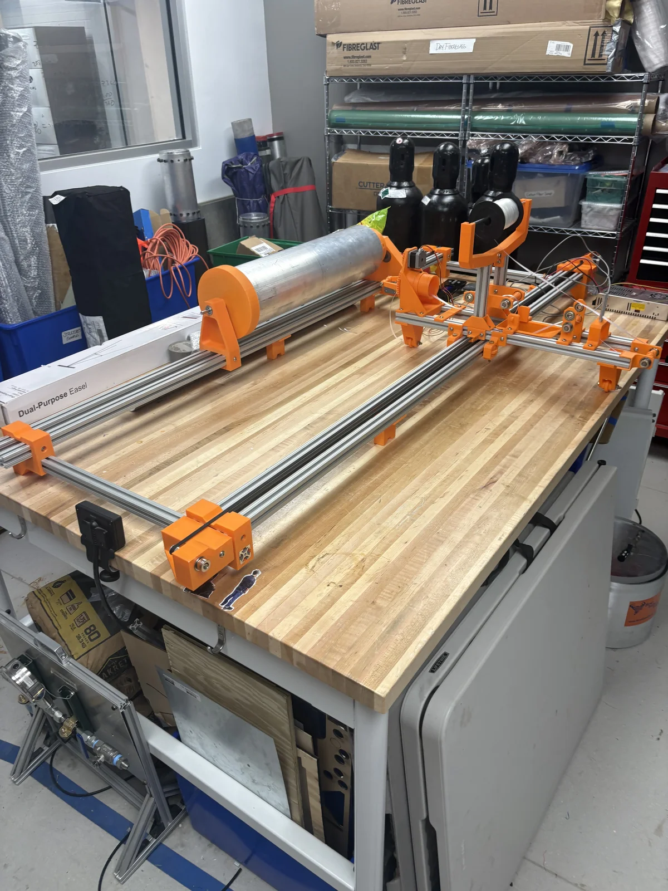
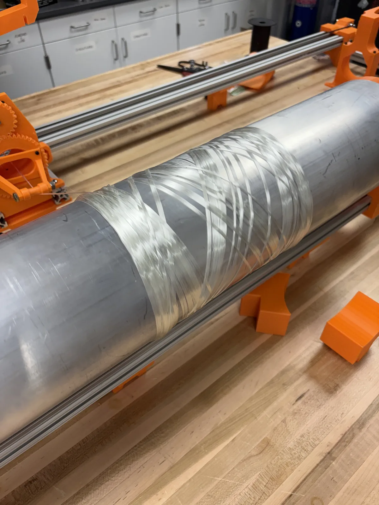
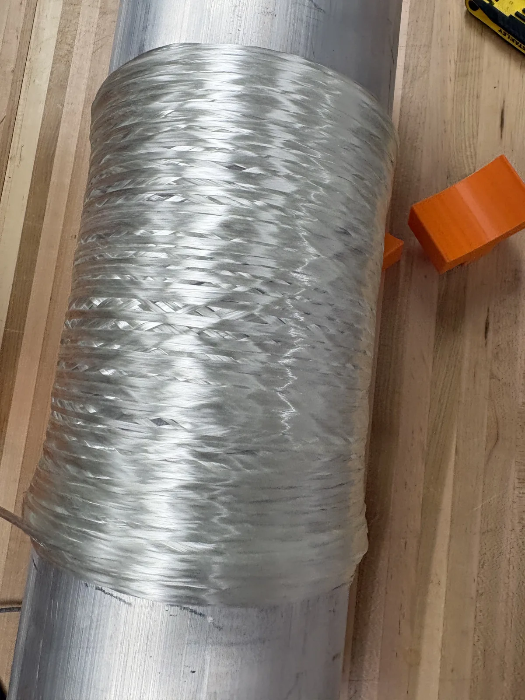
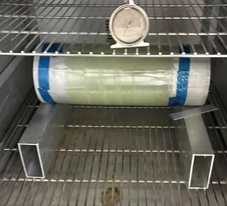

Filament Winder
Future Fiberglass & Carbon Flight Tubes

My Role
As Structures Lead, I'm bringing online the team's first ever filament winder for future fiberglass and carbon flight tubes.
I ran a complete test wind in October 2026. The team is replacing the motor and gear system as testing continues. We're aiming for faster, cheaper, potentially stronger tubes than hand layup.
- No finished filament-wound tubes yet
- Stress-strain characterization still pending
Winding trials
- Carriage moving along the rotating aluminum mandrel to lay down fiber


Prepreg practice
The team made a prepreg tube to practice layup as a fallback while working on the winder.
